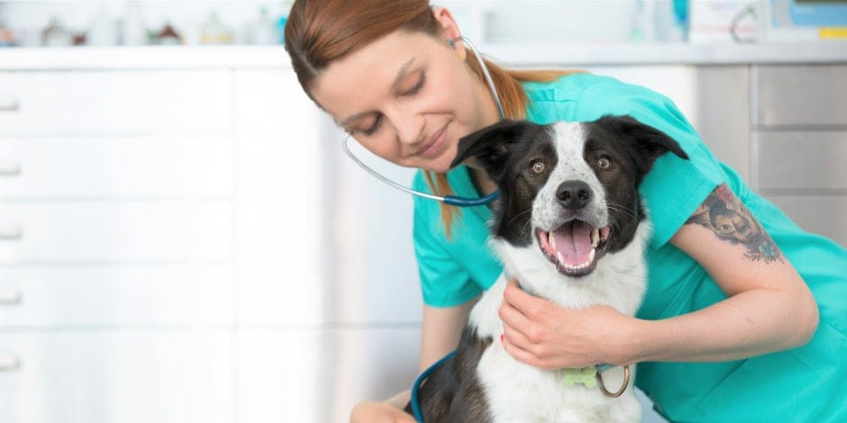
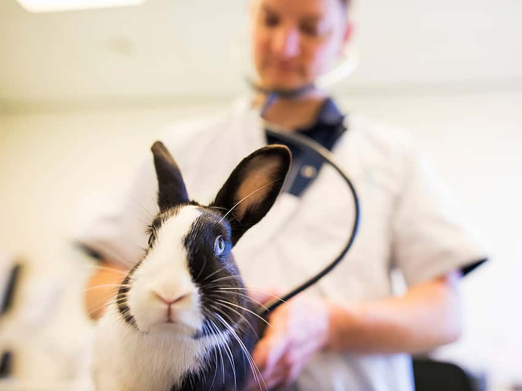
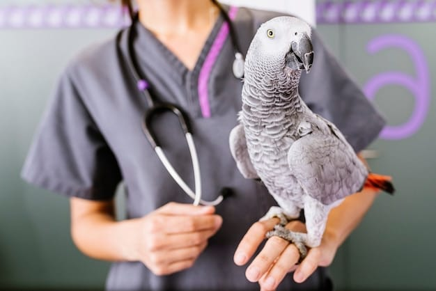

Consejos y Recomendaciones
Conocer cómo prevenir enfermedades en tus animales es fundamental para garantizar su bienestar, mantenerlos saludables y felices.

¿Cómo prevenir enfermedades en perritos?
- Alimentación adecuada
- Ejercicio diario
- Chequeos veterinarios regulares
- Higiene y limpieza
- Socialización con otros perros y personas

¿Cómo prevenir enfermedades en gatitos?
- Proporcionar juguetes estimulantes
- Ofrecer rascadores
- Chequeos veterinarios regulares
- Alimentación balanceada
¿Cómo prevenir enfermedades en Conejos?
- Socialización: Interactuar con ellos para fomentar un comportamiento amigable y reducir el estrés
- Ambiente seguro: Asegurarse de que su espacio esté libre de peligros y con refugios
- Chequeos veterinarios: Programar visitas regulares para vacunaciones y chequeos de salud
- Ejercicio: Permitirles espacio para saltar y explorar, lo que es esencial para su salud
- Dieta rica en fibra: Proporcionar heno fresco, verduras y pellets específicos para conejos

¿Cómo prevenir enfermedades en Loros?

¿Cómo prevenir enfermedades en Gallinas?